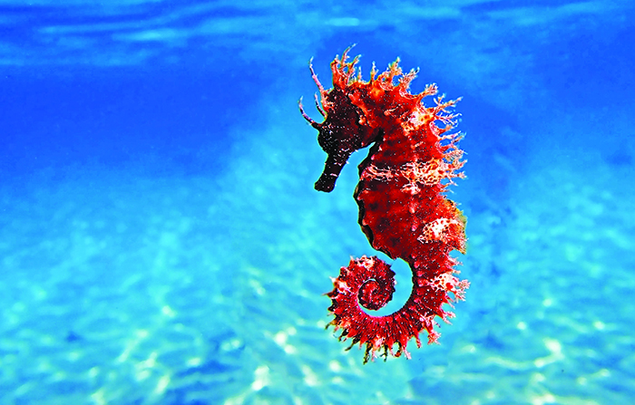

ზღვის ცხენი
ზღვის ცხენთევზა (ლათ. Hippocampus) — თევზების გვარი ნემსთევზასებრთა ოჯახისა. გარეგნულად ჭადრაკის მხედარს წააგავს. სხეულის სიგრძე 4-20 სმ აღწევს. გვარში 30 სახეობაა. გავრცელებულია ზომიერ და ტროპიკულ ზღვებში. ზღვის ცხენთევზა ცალსქესიანი თევზია. მამალს კუდის დასაწყისში ქვედა მხარეზე აქვს პარკი, რომელშიც დედალი დებს კვერცხს. პარკში გამოჩეკილი ლიფსიტების საკვები ერთხანს ყვითრია, შემდეგ გამოდიან წყალში, სადაც პლანქტონითა და ბენთოსით იკვებებიან. სარეწაო მნიშვნელობა არ აქვს.
ჰაბიტატ
ზღვის ცხენები ძირითადად გვხვდება არაღრმა ტროპიკულ და ზომიერ მარილიან წყალში მთელ მსოფლიოში, დაახლოებით 45°S-დან 45°N-მდე.[1] ისინი ცხოვრობენ დაცულ ადგილებში, როგორიცაა ზღვის ბალახის საწოლები, ესტუარიები, მარჯნის რიფები და მანგროები. ოთხი სახეობა გვხვდება წყნარი ოკეანის წყლებში ჩრდილოეთ ამერიკიდან სამხრეთ ამერიკამდე. ატლანტის ოკეანეში ჰიპოკამპუს ერექტუსი მერყეობს ახალი შოტლანდიიდან ურუგვაიმდე. H. zosterae, რომელიც ცნობილია როგორც ჯუჯა ზღვის ცხენი, გვხვდება ბაჰამის კუნძულებზე.
კოლონიები იქნა ნაპოვნი ევროპის წყლებში, როგორიცაა ტემზას ესტუარი.
ხმელთაშუა ზღვაში სამი სახეობა ბინადრობს: H. guttulatus (გრძელცხვირიანი ზღვის ცხენი), H. hippocampus (მოკლეცხვირიანი ზღვის ცხენი) და H. fuscus (ზღვის პონი). ეს სახეობები ქმნიან ტერიტორიებს; მამრები რჩებიან ჰაბიტატის 1 მ2 (10 კვ ფუტი) ფარგლებში, ხოლო მდედრები ასჯერ აღემატება მას.
